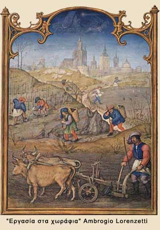

| Η ζωή στην ύπαιθρο  Το μεγαλύτερο μέρος του πληθυσμού ζούσε έξω από το κάστρο, στην ύπαιθρο, και συνήθως ήταν αγρότες - δουλοπάροικοι. Ανήκαν, δηλαδή, στον άρχοντα του κάστρου (φεουδάρχη) και ήταν υποχρεωμένοι να καλλιεργούν τη γη του. Για αμοιβή έπαιρναν ένα μικρό μέρος της συγκομιδής, το οποίο όμως δεν ήταν αρκετό για μια αξιοπρεπή ζωή. Οι κακές σοδειές, οι θανατηφόρες επιδημίες και οι συχνοί πόλεμοι επιδείνωναν ακόμη περισσότερο τη δύσκολη θέση των ανθρώπων της υπαίθρου. |
||